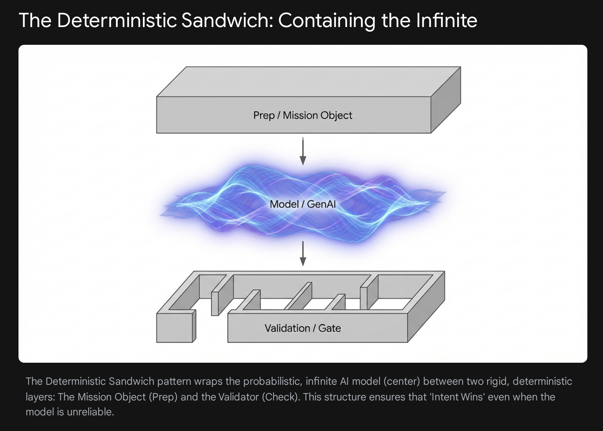

Notation, not proof
A Model of Bounded Change
The notation names a proposed transition. The workflow around that transition determines what was allowed, what evidence counts, and whether any effect becomes real.
The pinned base, current Terrain, and adopted intent used for this run.
One finite workflow proposes, checks, refines, or stops under fixed authority.
A supported proposal, no_change, blocked, or failed. The Run Record is sealed.
Admission may apply a candidate. Adoption may change future intent or policy.
Feedback adapts the next proposal. It does not widen the active authority, lower the evidence requirement, or admit or adopt its own result.
Mission Object & The Loop
This panel shows the Bounded Refinement Loop: probabilistic generation proposes, validation emits findings, and routing either permits another attempt or reaches a terminal result. A supported proposal remains separate from Admission.
Deterministic Sandwich

One probabilistic step works within named limits. Its output remains a candidate; Validation supplies evidence about the Mission's properties.
The model explores candidates from a bounded Context Packet; no side effects happen at this layer.
- Draft outputs are proposals, not accepted state.
- Passing checks can support proposal closure; separate authority still controls Admission or Adoption.
Substrate - Work becomes enforceable when intent, observed reality, and retained evidence are explicit.
Map
A structured, versioned representation of intent or observed structure, authoritative only for declared properties and scope.
Terrain
Reality-as-code: source, configs, schemas, and the behavior your systems actually execute.
Ledger
Append-only intent, input fingerprints, effects, structured results, transitions, and provenance. Under protected-sink and trust-root assumptions, missing or contradictory required evidence fails closed.
Semantic Density, Correctness, and Relevance
Three distinct properties of mission-ready context. Optimize all three; none can compensate for a missing one.
Distinct, decision-bearing meaning per unit of context.
Evidence-bound claims, current enough for the decision, with contradictions exposed.
Material tied to the active Mission, property, and decision.
Dense falsehood misleads. Correct irrelevance distracts. Relevant repetition wastes attention.
Rule of Seven
Inference Cost in Recurring Workflows
Per-call inference cost may fall while total workflow demand rises. Once inference becomes a recurring dependency, its cost, latency, and availability belong in the operating model.
Recurring inference can become infrastructure.
Infrastructure exposure should be measured and bounded.
- Pricing volatility → operational risk
- Provider lock-in → systemic dependency
- Latency → architectural friction
The Limit Case: Acceleration Without Bounds
When candidate volume rises without enforceable boundaries, small errors can compound into systemic risk. Governed loops bound effects, require evidence, and stop when declared acceptance cannot be established.
Illustrative model, not a measured risk curve. The dashed marker indicates the high-pressure region.
System Growth Raises the Cost of Broad Loops
The project tree grows across many changes. A dependable workflow does not revisit or rewrite the whole tree on every run; it operates on a declared slice with explicit effects.
The Judgment Bottleneck
When candidate production gets cheaper, value can move toward specifying intent, defining evidence, governing admission, and maintaining the workflow system.
The shift is empirical, not automatic: teams must measure whether the added controls reduce total cost and risk for comparable work.
Anatomy of Delegated Autonomy
Routine work can proceed with less interruption when the activated Mission keeps authority, effects, checks, and stopping conditions unchanged.
Shaping the Optimization Terrain
This is the geometry view of slicing. You are not dumping the whole repository into the window. You reshape the terrain so valid paths are easier and drift is harder.
Intent defines a target region. Slices, contracts, and Validators bias candidate production toward relevant states and expose selected forms of drift. They do not guarantee the shortest path, a global optimum, or a complete specification.
Authority and Enforcement for One Property
Authority is declared for the property being decided. The control plane protects the comparison and transition; it does not become a universal source of truth.